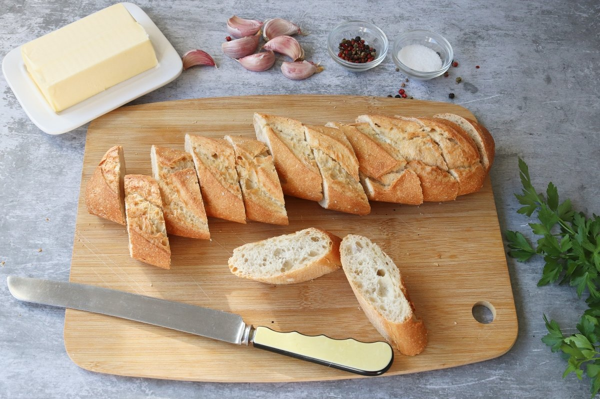

Pan de ajo

El pan de ajo es una de las recetas más populares y versátiles de la cocina. Gracias a la combinación de mantequilla, ajo y especias, es posible obtener un sabor intenso y una textura crujiente por fuera y suave por dentro. Puede servirse como aperitivo, acompañamiento o incluso como un delicioso tentempié.